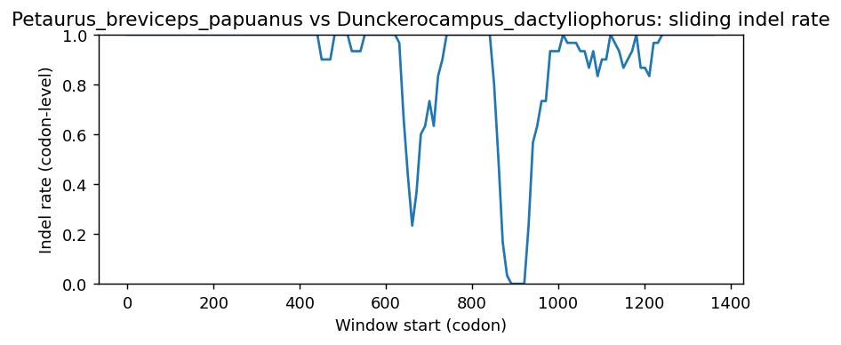

Ortholog Divergence Report
Input: PLAAT1.valid.longest.fa · N sequences: 534 · Aligned length: 1362 codons
Reference: Petaurus_breviceps_papuanus
Quick risk overview
- LOW: 0
- INTERMEDIATE: 0
- HIGH: 142311


Composition & complexity per sequence
Saved as per_sequence_composition.csv. High low-complexity or repeat content can reduce BLAST sensitivity due to soft masking.
| id | GC | GC skew | CpG dens. | AA LCR frac | NT repeat frac | AA len | CDS len |
|---|---|---|---|---|---|---|---|
| Petaurus_breviceps_papuanus | 0.52381 | -0.05303 | 0.05567 | 0.125 | 0.71032 | 168 | 504 |
| Brienomyrus_brachyistius | 0.56497 | -0.05333 | 0.04717 | 0.0 | 0.78154 | 177 | 531 |
| Rhincodon_typus | 0.42373 | 0.12889 | 0.01321 | 0.0 | 0.63465 | 177 | 531 |
| Phoca_vitulina | 0.45304 | 0.13821 | 0.01292 | 0.07182 | 0.68508 | 181 | 543 |
| Parambassis_ranga | 0.55056 | -0.02041 | 0.0394 | 0.0 | 0.78839 | 178 | 534 |
| Anser_cygnoides | 0.63187 | -0.0087 | 0.06606 | 0.0 | 0.7619 | 182 | 546 |
| Marmota_marmota_marmota | 0.50222 | 0.05015 | 0.01929 | 0.12444 | 0.72 | 225 | 675 |
| Seriola_dumerili | 0.55805 | -0.04698 | 0.03752 | 0.0 | 0.79026 | 178 | 534 |
| Budorcas_taxicolor | 0.42998 | 0.11009 | 0.01186 | 0.07101 | 0.65286 | 169 | 507 |
| Toxotes_jaculatrix | 0.55243 | -0.03729 | 0.02627 | 0.0 | 0.76966 | 178 | 534 |
| Gasterosteus_aculeatus | 0.54869 | -0.0785 | 0.0394 | 0.0 | 0.73408 | 178 | 534 |
| Carassius_carassius | 0.55424 | 0.0605 | 0.04941 | 0.08284 | 0.82446 | 169 | 507 |
| Plectropomus_leopardus | 0.5618 | -0.09333 | 0.03752 | 0.0 | 0.79213 | 178 | 534 |
| Amphiprion_ocellaris | 0.59738 | -0.05956 | 0.06942 | 0.0 | 0.75843 | 178 | 534 |
| Homo_sapiens | 0.51681 | 0.04607 | 0.04067 | 0.07563 | 0.66387 | 238 | 714 |
| Meriones_unguiculatus | 0.48303 | 0.00826 | 0.026 | 0.0 | 0.63074 | 167 | 501 |
| Platichthys_flesus | 0.57116 | -0.06885 | 0.0394 | 0.0 | 0.7397 | 178 | 534 |
| Labrus_mixtus | 0.56367 | -0.04983 | 0.03752 | 0.0 | 0.76217 | 178 | 534 |
| Camelus_dromedarius | 0.48323 | 0.11837 | 0.03162 | 0.07101 | 0.72189 | 169 | 507 |
| Mirounga_angustirostris | 0.45562 | 0.15152 | 0.01383 | 0.07692 | 0.64892 | 169 | 507 |
| Cygnus_atratus | 0.63004 | -0.00581 | 0.06606 | 0.0 | 0.76923 | 182 | 546 |
| Tinamus_guttatus | 0.49089 | 0.04192 | 0.02529 | 0.09877 | 0.77131 | 567 | 1701 |
| Thunnus_maccoyii | 0.55311 | -0.02649 | 0.0367 | 0.0 | 0.82234 | 182 | 546 |
| Erinaceus_europaeus | 0.44576 | 0.0885 | 0.01186 | 0.0 | 0.65286 | 169 | 507 |
| Poecilia_formosa | 0.55056 | -0.02721 | 0.03377 | 0.0 | 0.70599 | 178 | 534 |
| Pteronotus_mesoamericanus | 0.46746 | 0.11392 | 0.02174 | 0.09467 | 0.67456 | 169 | 507 |
| Falco_cherrug | 0.61145 | 0.01003 | 0.07377 | 0.11043 | 0.78732 | 163 | 489 |
| Microcebus_murinus | 0.46032 | 0.06897 | 0.02584 | 0.0 | 0.60516 | 168 | 504 |
| Mastomys_coucha | 0.47705 | 0.02092 | 0.032 | 0.0 | 0.75848 | 167 | 501 |
| Ambystoma_mexicanum | 0.57547 | 0.06557 | 0.06142 | 0.14151 | 0.69497 | 212 | 636 |
| Kryptolebias_marmoratus | 0.59176 | -0.03797 | 0.05253 | 0.0 | 0.71348 | 178 | 534 |
| Echinops_telfairi | 0.48235 | 0.06504 | 0.02947 | 0.07059 | 0.73529 | 170 | 510 |
| Chionomys_nivalis | 0.49701 | 0.02811 | 0.032 | 0.0 | 0.71058 | 167 | 501 |
| Meleagris_gallopavo | 0.6075 | 0.02597 | 0.05731 | 0.11243 | 0.71203 | 169 | 507 |
| Scophthalmus_maximus | 0.55431 | -0.05405 | 0.02814 | 0.0 | 0.77528 | 178 | 534 |
| Camelus_ferus | 0.47238 | 0.1371 | 0.02672 | 0.0 | 0.70476 | 175 | 525 |
| Capra_hircus | 0.43158 | 0.10569 | 0.0123 | 0.06316 | 0.66667 | 190 | 570 |
| Triplophysa_dalaica | 0.51434 | 0.05923 | 0.04488 | 0.07527 | 0.75269 | 186 | 558 |
| Diceros_bicornis_minor | 0.46154 | 0.08547 | 0.02569 | 0.07101 | 0.67061 | 169 | 507 |
| Thunnus_thynnus | 0.55495 | -0.0297 | 0.0367 | 0.0 | 0.82234 | 182 | 546 |
| Oncorhynchus_kisutch | 0.52996 | -0.03887 | 0.03377 | 0.0 | 0.84082 | 178 | 534 |
| Dromaius_novaehollandiae | 0.55495 | 0.0 | 0.03249 | 0.06486 | 0.79279 | 185 | 555 |
| Chaetura_pelagica | 0.59325 | 0.01003 | 0.05169 | 0.10119 | 0.74802 | 168 | 504 |
| Alligator_mississippiensis | 0.63652 | -0.05263 | 0.08557 | 0.0603 | 0.76047 | 199 | 597 |
| Paralichthys_olivaceus | 0.56367 | -0.06977 | 0.03565 | 0.0 | 0.78277 | 178 | 534 |
| Trichechus_manatus_latirostris | 0.50903 | 0.09032 | 0.03454 | 0.06897 | 0.69787 | 203 | 609 |
| Larimichthys_crocea | 0.55618 | -0.05051 | 0.0394 | 0.14607 | 0.73783 | 178 | 534 |
| Hypomesus_transpacificus | 0.54682 | 0.02055 | 0.03565 | 0.0 | 0.7809 | 178 | 534 |
| Rhea_pennata | 0.5503 | 0.00358 | 0.03953 | 0.07101 | 0.79882 | 169 | 507 |
| Clarias_gariepinus | 0.53409 | -0.04965 | 0.04934 | 0.0 | 0.77652 | 176 | 528 |
| Salvelinus_namaycush | 0.53996 | -0.02527 | 0.03711 | 0.0 | 0.81871 | 171 | 513 |
| Rhinatrema_bivittatum | 0.51282 | 0.1 | 0.04743 | 0.07101 | 0.78107 | 169 | 507 |
| Pangasianodon_hypophthalmus | 0.53484 | 0.03521 | 0.05094 | 0.0 | 0.85687 | 177 | 531 |
| Cervus_elaphus | 0.4266 | 0.11741 | 0.01557 | 0.0 | 0.65458 | 193 | 579 |
| Equus_quagga | 0.46548 | 0.10169 | 0.02372 | 0.07101 | 0.66667 | 169 | 507 |
| Corvus_hawaiiensis | 0.53057 | 0.10037 | 0.02964 | 0.07101 | 0.79093 | 169 | 507 |
| Paramormyrops_kingsleyae | 0.55819 | -0.0742 | 0.04348 | 0.0 | 0.81262 | 169 | 507 |
| Ctenopharyngodon_idella | 0.51481 | 0.0 | 0.03154 | 0.0 | 0.78704 | 180 | 540 |
| Peromyscus_eremicus | 0.51497 | 0.03101 | 0.042 | 0.0 | 0.69461 | 167 | 501 |
| Crocodylus_porosus | 0.68724 | -0.05988 | 0.11134 | 0.24074 | 0.70988 | 162 | 486 |
| Onychomys_torridus | 0.51297 | 0.02724 | 0.046 | 0.0 | 0.72056 | 167 | 501 |
| Cebus_imitator | 0.57533 | 0.08866 | 0.06651 | 0.13879 | 0.66548 | 281 | 843 |
| Perognathus_longimembris_pacificus | 0.4623 | 0.03863 | 0.00795 | 0.0 | 0.75 | 168 | 504 |
| Sphaeramia_orbicularis | 0.5618 | -0.06667 | 0.03377 | 0.0 | 0.76404 | 178 | 534 |
| Lagenorhynchus_obliquidens | 0.45965 | 0.08397 | 0.02109 | 0.08421 | 0.68421 | 190 | 570 |
| Gallus_gallus | 0.61144 | 0.02581 | 0.05929 | 0.11243 | 0.74162 | 169 | 507 |
| Eumetopias_jubatus | 0.46041 | 0.128 | 0.01661 | 0.07182 | 0.69613 | 181 | 543 |
| Pleuronectes_platessa | 0.56929 | -0.05921 | 0.03752 | 0.0 | 0.75468 | 178 | 534 |
| Balaenoptera_acutorostrata | 0.44987 | 0.03621 | 0.01757 | 0.09023 | 0.70802 | 266 | 798 |
| Microtus_ochrogaster | 0.49701 | 0.00402 | 0.038 | 0.0 | 0.73054 | 167 | 501 |
| Gavia_stellata | 0.59961 | -0.04605 | 0.04941 | 0.07101 | 0.76331 | 169 | 507 |
| Phasianus_colchicus | 0.60158 | 0.02295 | 0.05534 | 0.11243 | 0.73964 | 169 | 507 |
| Bison_bison_bison | 0.4386 | 0.08 | 0.0123 | 0.06316 | 0.65088 | 190 | 570 |
| Mesoplodon_densirostris | 0.46202 | 0.08725 | 0.01863 | 0.05581 | 0.68837 | 215 | 645 |
| Gadus_macrocephalus | 0.54307 | -0.02069 | 0.02627 | 0.07303 | 0.75468 | 178 | 534 |
| Morone_saxatilis | 0.55805 | -0.05369 | 0.04128 | 0.0 | 0.77341 | 178 | 534 |
| Calidris_pugnax | 0.59172 | -0.02667 | 0.0415 | 0.11243 | 0.7929 | 169 | 507 |
| Misgurnus_anguillicaudatus | 0.47407 | 0.02344 | 0.03154 | 0.07778 | 0.77778 | 180 | 540 |
| Esox_lucius | 0.5412 | -0.03806 | 0.03752 | 0.0 | 0.83521 | 178 | 534 |
| Chelonia_mydas | 0.5858 | 0.09764 | 0.06324 | 0.0 | 0.81262 | 169 | 507 |
| Cuculus_canorus | 0.58378 | 0.04938 | 0.04874 | 0.0 | 0.75495 | 185 | 555 |
| Charadrius_vociferus | 0.587 | 0.0 | 0.05252 | 0.07547 | 0.81761 | 159 | 477 |
| Eurypyga_helias | 0.60552 | -0.05537 | 0.05929 | 0.11243 | 0.76923 | 169 | 507 |
| Canis_lupus_dingo | 0.43984 | 0.10314 | 0.00988 | 0.0 | 0.66667 | 169 | 507 |
| Spea_bombifrons | 0.45365 | 0.01739 | 0.02372 | 0.0 | 0.68639 | 169 | 507 |
| Sarcophilus_harrisii | 0.47281 | -0.02 | 0.0355 | 0.12057 | 0.70686 | 282 | 846 |
| Antrostomus_carolinensis | 0.59566 | 0.00662 | 0.04545 | 0.11834 | 0.77515 | 169 | 507 |
| Erpetoichthys_calabaricus | 0.51148 | 0.01282 | 0.02516 | 0.03934 | 0.7847 | 305 | 915 |
| Embiotoca_jacksoni | 0.55993 | -0.03679 | 0.04128 | 0.0 | 0.75281 | 178 | 534 |
| Oreochromis_niloticus | 0.5412 | -0.03114 | 0.02627 | 0.0 | 0.7603 | 178 | 534 |
| Eleutherodactylus_coqui | 0.41216 | 0.03825 | 0.01127 | 0.04054 | 0.73086 | 296 | 888 |
| Eulemur_rufifrons | 0.46863 | 0.1046 | 0.02947 | 0.0 | 0.66078 | 170 | 510 |
| Dicentrarchus_labrax | 0.55993 | -0.04348 | 0.03752 | 0.0 | 0.8015 | 178 | 534 |
| Mugil_cephalus | 0.55243 | -0.05763 | 0.03189 | 0.0 | 0.73596 | 178 | 534 |
| Onychostoma_macrolepis | 0.5463 | 0.01695 | 0.05751 | 0.0 | 0.85185 | 180 | 540 |
| Halichoerus_grypus | 0.45614 | 0.1453 | 0.01367 | 0.07602 | 0.66667 | 171 | 513 |
| Pimephales_promelas | 0.52963 | 0.00699 | 0.0538 | 0.0 | 0.85185 | 180 | 540 |
| Ovis_aries | 0.40872 | 0.08934 | 0.00943 | 0.0 | 0.67609 | 283 | 849 |
| Trematomus_bernacchii | 0.56929 | -0.05921 | 0.04503 | 0.0 | 0.77528 | 178 | 534 |
| Apus_apus | 0.56548 | 0.01053 | 0.03976 | 0.08333 | 0.75992 | 168 | 504 |
| Pungitius_pungitius | 0.55056 | -0.08844 | 0.03565 | 0.0 | 0.73221 | 178 | 534 |
| Mus_caroli | 0.46707 | 0.03419 | 0.024 | 0.0 | 0.78643 | 167 | 501 |
| Fundulus_heteroclitus | 0.55618 | -0.0303 | 0.03752 | 0.0 | 0.68914 | 178 | 534 |
| Apteryx_mantelli | 0.57396 | -0.03093 | 0.04743 | 0.14201 | 0.7712 | 169 | 507 |
| Columba_livia | 0.59961 | -0.01974 | 0.05336 | 0.07101 | 0.77909 | 169 | 507 |
| Trichosurus_vulpecula | 0.51677 | -0.0458 | 0.05534 | 0.12426 | 0.714 | 169 | 507 |
| Melopsittacus_undulatus | 0.5641 | 0.00699 | 0.03162 | 0.11243 | 0.80671 | 169 | 507 |
| Alosa_sapidissima | 0.58845 | -0.03165 | 0.06903 | 0.0 | 0.79143 | 179 | 537 |
| Neogale_vison | 0.45562 | 0.11688 | 0.01186 | 0.14793 | 0.6785 | 169 | 507 |
| Condylura_cristata | 0.47337 | 0.05833 | 0.02569 | 0.07101 | 0.66469 | 169 | 507 |
| Stegostoma_tigrinum | 0.42012 | 0.09859 | 0.01779 | 0.0 | 0.64892 | 169 | 507 |
| Leucoraja_erinaceus | 0.51789 | -0.06909 | 0.04151 | 0.0678 | 0.73446 | 177 | 531 |
| Etheostoma_cragini | 0.55243 | -0.07119 | 0.03565 | 0.0 | 0.77154 | 178 | 534 |
| Sardina_pilchardus | 0.59032 | -0.01577 | 0.0709 | 0.0 | 0.81564 | 179 | 537 |
| Hoplias_malabaricus | 0.50659 | 0.04089 | 0.03396 | 0.0 | 0.84557 | 177 | 531 |
| Hippopotamus_amphibius_kiboko | 0.465 | 0.08961 | 0.02671 | 0.0 | 0.66333 | 200 | 600 |
| Epinephelus_moara | 0.55805 | -0.0604 | 0.0394 | 0.0 | 0.78839 | 178 | 534 |
| Mauremys_reevesii | 0.59566 | 0.09934 | 0.06522 | 0.0 | 0.78501 | 169 | 507 |
| Mastacembelus_armatus | 0.52809 | -0.07092 | 0.03002 | 0.06742 | 0.79963 | 178 | 534 |
| Syngnathus_typhle | 0.53788 | -0.02817 | 0.03226 | 0.0 | 0.81818 | 176 | 528 |
| Cheilinus_undulatus | 0.55805 | -0.02685 | 0.03752 | 0.0 | 0.77341 | 178 | 534 |
| Arvicola_amphibius | 0.49102 | 0.03252 | 0.032 | 0.0 | 0.72655 | 167 | 501 |
| Notothenia_coriiceps | 0.56367 | -0.06977 | 0.04128 | 0.08427 | 0.77154 | 178 | 534 |
| Nycticebus_coucang | 0.45833 | 0.09091 | 0.02386 | 0.07143 | 0.70833 | 168 | 504 |
| Peromyscus_californicus_insignis | 0.52495 | 0.02662 | 0.046 | 0.0 | 0.73054 | 167 | 501 |
| Ochotona_curzoniae | 0.46627 | 0.04681 | 0.02187 | 0.0 | 0.69048 | 168 | 504 |
| Ictalurus_furcatus | 0.54819 | 0.04029 | 0.06237 | 0.0 | 0.85542 | 166 | 498 |
| Doryrhamphus_excisus | 0.59738 | -0.01567 | 0.07692 | 0.07303 | 0.81648 | 178 | 534 |
| Trachemys_scripta_elegans | 0.60734 | 0.02309 | 0.05508 | 0.0 | 0.74326 | 309 | 927 |
| Eschrichtius_robustus | 0.46502 | 0.02655 | 0.01923 | 0.04938 | 0.71331 | 243 | 729 |
| Nomascus_leucogenys | 0.56733 | 0.0856 | 0.05746 | 0.15232 | 0.66667 | 302 | 906 |
| Chelmon_rostratus | 0.57865 | -0.05502 | 0.04878 | 0.0 | 0.77715 | 178 | 534 |
| Sinocyclocheilus_anshuiensis | 0.55048 | 0.0519 | 0.04962 | 0.08 | 0.8419 | 175 | 525 |
| Osmerus_eperlanus | 0.53558 | 0.00699 | 0.02814 | 0.0 | 0.77715 | 178 | 534 |
| Trichomycterus_rosablanca | 0.52273 | 0.0 | 0.03795 | 0.0 | 0.8125 | 176 | 528 |
| Nothobranchius_furzeri | 0.52622 | -0.02491 | 0.03377 | 0.0 | 0.78464 | 178 | 534 |
| Sorex_fumeus | 0.4497 | 0.14912 | 0.01976 | 0.0 | 0.64892 | 169 | 507 |
| Oreochromis_aureus | 0.5412 | -0.03114 | 0.02627 | 0.0 | 0.7603 | 178 | 534 |
| Myiozetetes_cayanensis | 0.52352 | 0.10156 | 0.01844 | 0.07362 | 0.80573 | 163 | 489 |
| Balaenoptera_musculus | 0.44967 | 0.02907 | 0.01178 | 0.09412 | 0.71111 | 255 | 765 |
| Panthera_tigris | 0.45365 | 0.09565 | 0.01383 | 0.0 | 0.67456 | 169 | 507 |
| Hippocampus_zosterae | 0.53407 | -0.02069 | 0.04428 | 0.0 | 0.75322 | 181 | 543 |
| Muntiacus_reevesi | 0.44386 | 0.11462 | 0.01406 | 0.06316 | 0.65439 | 190 | 570 |
| Pygocentrus_nattereri | 0.50847 | 0.03704 | 0.03019 | 0.0 | 0.80038 | 177 | 531 |
| Artibeus_jamaicensis | 0.48521 | 0.05691 | 0.03162 | 0.07101 | 0.71598 | 169 | 507 |
| Hemibagrus_wyckioides | 0.54819 | 0.01099 | 0.05634 | 0.0 | 0.82731 | 166 | 498 |
| Puntigrus_tetrazona | 0.59763 | 0.0033 | 0.0751 | 0.08284 | 0.80868 | 169 | 507 |
| Felis_catus | 0.50361 | 0.10029 | 0.02168 | 0.0 | 0.66089 | 231 | 693 |
| Osmerus_mordax | 0.5451 | 0.02158 | 0.02947 | 0.0 | 0.77451 | 170 | 510 |
| Micropterus_dolomieu | 0.56367 | -0.06312 | 0.0394 | 0.0 | 0.78464 | 178 | 534 |
| Notolabrus_celidotus | 0.55618 | -0.05724 | 0.03565 | 0.0 | 0.76966 | 178 | 534 |
| Tupaia_chinensis | 0.5083 | 0.06825 | 0.03323 | 0.15385 | 0.66365 | 221 | 663 |
| Amblyraja_radiata | 0.51224 | -0.07353 | 0.03962 | 0.0678 | 0.73823 | 177 | 531 |
| Indicator_indicator | 0.59213 | -0.01399 | 0.04979 | 0.0 | 0.77433 | 161 | 483 |
| Apodemus_sylvaticus | 0.47904 | 0.04167 | 0.032 | 0.0 | 0.75848 | 167 | 501 |
| Synchiropus_splendidus | 0.55243 | -0.05085 | 0.04503 | 0.0 | 0.78839 | 178 | 534 |
| Brachionichthys_hirsutus | 0.55431 | -0.05405 | 0.04315 | 0.07865 | 0.75281 | 178 | 534 |
| Syngnathus_scovelli | 0.53977 | -0.03158 | 0.03036 | 0.0 | 0.78977 | 176 | 528 |
| Monopterus_albus | 0.52381 | -0.04545 | 0.02584 | 0.0 | 0.74008 | 168 | 504 |
| Scomber_scombrus | 0.54307 | -0.01379 | 0.03565 | 0.0 | 0.7397 | 178 | 534 |
| Salvelinus_fontinalis | 0.52228 | -0.12628 | 0.03393 | 0.13904 | 0.81818 | 187 | 561 |
| Suncus_etruscus | 0.42209 | 0.13084 | 0.01383 | 0.10651 | 0.66075 | 169 | 507 |
| Mirounga_leonina | 0.45809 | 0.15745 | 0.01562 | 0.07602 | 0.65692 | 171 | 513 |
| Mustela_nigripes | 0.45759 | 0.11207 | 0.01383 | 0.14793 | 0.6785 | 169 | 507 |
| Ceratotherium_simum_simum | 0.45957 | 0.09013 | 0.02174 | 0.07101 | 0.68047 | 169 | 507 |
| Opisthocomus_hoazin | 0.61341 | -0.00322 | 0.06126 | 0.11243 | 0.75937 | 169 | 507 |
| Miniopterus_natalensis | 0.47929 | 0.11934 | 0.02767 | 0.07101 | 0.63511 | 169 | 507 |
| Anas_platyrhynchos | 0.6213 | 0.00952 | 0.05929 | 0.11243 | 0.73767 | 169 | 507 |
| Perca_fluviatilis | 0.55805 | -0.07383 | 0.03565 | 0.0 | 0.78464 | 178 | 534 |
| Neomonachus_schauinslandi | 0.46004 | 0.16102 | 0.01562 | 0.07602 | 0.65692 | 171 | 513 |
| Dasypus_novemcinctus | 0.45168 | 0.1179 | 0.01976 | 0.07101 | 0.64103 | 169 | 507 |
| Sparus_aurata | 0.57303 | -0.05882 | 0.04503 | 0.06742 | 0.77341 | 178 | 534 |
| Gavialis_gangeticus | 0.65801 | -0.01754 | 0.09827 | 0.05195 | 0.70707 | 231 | 693 |
| Neolamprologus_brichardi | 0.52996 | -0.03887 | 0.02251 | 0.0 | 0.78652 | 178 | 534 |
| Astatotilapia_calliptera | 0.53371 | -0.0386 | 0.02251 | 0.0 | 0.78652 | 178 | 534 |
| Engraulis_encrasicolus | 0.60741 | -0.06707 | 0.07421 | 0.0 | 0.78704 | 180 | 540 |
| Callorhinchus_milii | 0.51874 | 0.01141 | 0.04743 | 0.0 | 0.78107 | 169 | 507 |
| Cottoperca_gobio | 0.55056 | -0.06803 | 0.0394 | 0.0 | 0.77154 | 178 | 534 |
| Colossoma_macropomum | 0.47723 | 0.0229 | 0.02372 | 0.0 | 0.82332 | 183 | 549 |
| Lipotes_vexillifer | 0.45789 | 0.0728 | 0.02109 | 0.08421 | 0.66667 | 190 | 570 |
| Castor_canadensis | 0.43254 | 0.09174 | 0.00994 | 0.0 | 0.63492 | 168 | 504 |
| Phyllostomus_hastatus | 0.47535 | 0.10373 | 0.02767 | 0.07101 | 0.68047 | 169 | 507 |
| Cololabis_saira | 0.5618 | -0.03333 | 0.04315 | 0.0 | 0.76217 | 178 | 534 |
| Falco_rusticolus | 0.61145 | 0.01003 | 0.07377 | 0.11043 | 0.78732 | 163 | 489 |
| Thalassophryne_amazonica | 0.51873 | -0.02527 | 0.02627 | 0.0 | 0.70037 | 178 | 534 |
| Alligator_sinensis | 0.64103 | -0.02154 | 0.09486 | 0.07101 | 0.75148 | 169 | 507 |
| Phaenicophaeus_curvirostris | 0.61933 | 0.08917 | 0.07312 | 0.08876 | 0.76134 | 169 | 507 |
| Anas_acuta | 0.61933 | 0.01274 | 0.06126 | 0.11243 | 0.75345 | 169 | 507 |
| Coturnix_japonica | 0.58974 | 0.01672 | 0.03755 | 0.07101 | 0.74753 | 169 | 507 |
| Takifugu_flavidus | 0.52593 | -0.10563 | 0.02597 | 0.07778 | 0.75556 | 180 | 540 |
| Myotis_daubentonii | 0.48029 | 0.09701 | 0.01436 | 0.06452 | 0.69176 | 186 | 558 |
| Gracilinanus_agilis | 0.50091 | -0.03273 | 0.0438 | 0.06557 | 0.73406 | 183 | 549 |
| Pezoporus_flaviventris | 0.57988 | 0.02721 | 0.0415 | 0.11243 | 0.77909 | 169 | 507 |
| Echeneis_naucrates | 0.5618 | -0.08 | 0.04315 | 0.0 | 0.78652 | 178 | 534 |
| Sorex_araneus | 0.46507 | 0.12446 | 0.024 | 0.0 | 0.67066 | 167 | 501 |
| Malaclemys_terrapin_pileata | 0.5858 | 0.09764 | 0.06324 | 0.0 | 0.81065 | 169 | 507 |
| Chanodichthys_erythropterus | 0.51481 | 0.0 | 0.03525 | 0.0 | 0.78519 | 180 | 540 |
| Kogia_breviceps | 0.45649 | 0.02639 | 0.01072 | 0.04819 | 0.70683 | 249 | 747 |
| Polyodon_spathula | 0.5858 | -0.04377 | 0.04941 | 0.12426 | 0.73964 | 169 | 507 |
| Otolemur_garnettii | 0.44841 | 0.09735 | 0.01988 | 0.0 | 0.7004 | 168 | 504 |
| Lemur_catta | 0.47255 | 0.11203 | 0.02554 | 0.0 | 0.64902 | 170 | 510 |
| Monodon_monoceros | 0.46586 | 0.03448 | 0.01609 | 0.06426 | 0.7162 | 249 | 747 |
| Leptonychotes_weddellii | 0.45562 | 0.15152 | 0.01383 | 0.07692 | 0.64892 | 169 | 507 |
| Melanotaenia_boesemani | 0.53745 | -0.02439 | 0.02064 | 0.0 | 0.78652 | 178 | 534 |
| Cyprinus_carpio | 0.53234 | 0.06542 | 0.0515 | 0.06965 | 0.77944 | 201 | 603 |
| Denticeps_clupeoides | 0.53073 | 0.01053 | 0.04851 | 0.0 | 0.72067 | 179 | 537 |
| Solea_senegalensis | 0.52247 | -0.06093 | 0.03002 | 0.07303 | 0.79026 | 178 | 534 |
| Syngnathus_acus | 0.53977 | -0.02456 | 0.03226 | 0.0 | 0.80303 | 176 | 528 |
| Cyrtonyx_montezumae | 0.59763 | -0.0033 | 0.0415 | 0.07101 | 0.74556 | 169 | 507 |
| Moschus_berezovskii | 0.44211 | 0.10317 | 0.01406 | 0.06316 | 0.67895 | 190 | 570 |
| Dryobates_pubescens | 0.57442 | -0.0073 | 0.03782 | 0.0 | 0.80713 | 159 | 477 |
| Dromiciops_gliroides | 0.48994 | -0.03226 | 0.04173 | 0.09052 | 0.73994 | 232 | 696 |
| Gopherus_flavomarginatus | 0.58654 | 0.20765 | 0.03852 | 0.0 | 0.78686 | 208 | 624 |
| Leopardus_geoffroyi | 0.49097 | 0.09699 | 0.03454 | 0.0 | 0.63711 | 203 | 609 |
| Molossus_molossus | 0.45131 | 0.08714 | 0.01313 | 0.06742 | 0.66105 | 178 | 534 |
| Marmota_monax | 0.4983 | 0.18089 | 0.02215 | 0.09694 | 0.71088 | 196 | 588 |
| Centrocercus_urophasianus | 0.58086 | 0.02273 | 0.03967 | 0.0 | 0.70792 | 202 | 606 |
| Monodelphis_domestica | 0.50091 | -0.02545 | 0.04015 | 0.06557 | 0.70492 | 183 | 549 |
| Numida_meleagris | 0.62722 | -0.01258 | 0.06324 | 0.07101 | 0.72584 | 169 | 507 |
| Phocoena_sinus | 0.46452 | 0.03746 | 0.01609 | 0.06426 | 0.71218 | 249 | 747 |
| Bubalus_bubalis | 0.44035 | 0.08367 | 0.0123 | 0.06316 | 0.65965 | 190 | 570 |
| Triplophysa_rosa | 0.52509 | 0.05802 | 0.04847 | 0.0 | 0.78495 | 186 | 558 |
| Lagopus_leucura | 0.5768 | 0.03116 | 0.03273 | 0.0 | 0.71078 | 204 | 612 |
| Panthera_onca | 0.53077 | 0.11111 | 0.02057 | 0.0 | 0.61795 | 130 | 390 |
| Epinephelus_lanceolatus | 0.55618 | -0.05724 | 0.03752 | 0.0 | 0.79213 | 178 | 534 |
| Lathamus_discolor | 0.57002 | 0.02422 | 0.03755 | 0.11243 | 0.80671 | 169 | 507 |
| Vulpes_lagopus | 0.44181 | 0.11607 | 0.00988 | 0.0 | 0.67456 | 169 | 507 |
| Eleginops_maclovinus | 0.56367 | -0.05648 | 0.04315 | 0.0 | 0.76779 | 178 | 534 |
| Terrapene_triunguis | 0.58974 | 0.10368 | 0.06719 | 0.0 | 0.83037 | 169 | 507 |
| Xiphophorus_hellerii | 0.54307 | -0.03448 | 0.02627 | 0.0 | 0.73034 | 178 | 534 |
| Pteropus_alecto | 0.44773 | 0.0837 | 0.01976 | 0.0 | 0.65089 | 169 | 507 |
| Cygnus_olor | 0.62088 | 0.00885 | 0.05872 | 0.0 | 0.77656 | 182 | 546 |
| Lates_calcarifer | 0.56805 | -0.04861 | 0.02767 | 0.07692 | 0.7929 | 169 | 507 |
| Mustela_erminea | 0.45759 | 0.12069 | 0.01186 | 0.14793 | 0.6785 | 169 | 507 |
| Aquila_chrysaetos_chrysaetos | 0.61144 | -0.05806 | 0.06719 | 0.07101 | 0.76134 | 169 | 507 |
| Chanos_chanos | 0.50741 | 0.0219 | 0.02597 | 0.0 | 0.7963 | 180 | 540 |
| Lampris_incognitus | 0.56929 | -0.02632 | 0.04503 | 0.0 | 0.73596 | 178 | 534 |
| Bos_taurus | 0.44211 | 0.07937 | 0.01406 | 0.06316 | 0.65439 | 190 | 570 |
| Apteryx_rowi | 0.57199 | -0.02759 | 0.04545 | 0.14201 | 0.7712 | 169 | 507 |
| Thunnus_albacares | 0.55311 | -0.02649 | 0.03486 | 0.0 | 0.82234 | 182 | 546 |
| Phocoena_phocoena | 0.45965 | 0.07634 | 0.02109 | 0.08421 | 0.68421 | 190 | 570 |
| Hippoglossus_hippoglossus | 0.57116 | -0.08197 | 0.0394 | 0.0 | 0.76592 | 178 | 534 |
| Gymnogyps_californianus | 0.59763 | -0.05611 | 0.05138 | 0.07101 | 0.80671 | 169 | 507 |
| Hypanus_sabinus | 0.42604 | 0.07407 | 0.01779 | 0.0 | 0.64892 | 169 | 507 |
| Pan_paniscus | 0.56532 | 0.07559 | 0.06235 | 0.15385 | 0.67643 | 273 | 819 |
| Ailuropoda_melanoleuca | 0.46351 | 0.11489 | 0.01383 | 0.07692 | 0.6785 | 169 | 507 |
| Gorilla_gorilla_gorilla | 0.56532 | 0.07559 | 0.06112 | 0.10989 | 0.67521 | 273 | 819 |
| Pteropus_giganteus | 0.44181 | 0.08036 | 0.01581 | 0.0 | 0.65089 | 169 | 507 |
| Falco_naumanni | 0.61759 | 0.01987 | 0.07172 | 0.09816 | 0.79346 | 163 | 489 |
| Carlito_syrichta | 0.57785 | 0.10978 | 0.07044 | 0.18685 | 0.64706 | 289 | 867 |
| Pipistrellus_kuhlii | 0.46627 | 0.07234 | 0.0159 | 0.07738 | 0.68254 | 168 | 504 |
| Ovis_canadensis | 0.42998 | 0.11009 | 0.01186 | 0.07101 | 0.62327 | 169 | 507 |
| Marmota_flaviventris | 0.47024 | 0.11392 | 0.01392 | 0.0 | 0.70635 | 168 | 504 |
| Pezoporus_occidentalis | 0.57396 | 0.01718 | 0.03557 | 0.11243 | 0.77515 | 169 | 507 |
| Lutra_lutra | 0.45562 | 0.10823 | 0.01383 | 0.14793 | 0.69428 | 169 | 507 |
| Caloenas_nicobarica | 0.59961 | 0.0 | 0.05731 | 0.11243 | 0.7574 | 169 | 507 |
| Grus_americana | 0.59763 | -0.0429 | 0.05534 | 0.10651 | 0.69822 | 169 | 507 |
| Prionailurus_viverrinus | 0.45759 | 0.10345 | 0.01581 | 0.0 | 0.67061 | 169 | 507 |
| Colius_striatus | 0.5743 | -0.01399 | 0.04225 | 0.0 | 0.81124 | 166 | 498 |
| Phacochoerus_africanus | 0.45957 | 0.09013 | 0.01976 | 0.07101 | 0.71006 | 169 | 507 |
| Neoarius_graeffei | 0.51412 | 0.01832 | 0.04528 | 0.0 | 0.82674 | 177 | 531 |
| Pelmatolapia_mariae | 0.53933 | -0.04167 | 0.02439 | 0.0 | 0.77154 | 178 | 534 |
| Dipodomys_ordii | 0.45309 | 0.02203 | 0.012 | 0.0 | 0.75649 | 167 | 501 |
| Chiloscyllium_plagiosum | 0.40631 | 0.1068 | 0.01186 | 0.0 | 0.64103 | 169 | 507 |
| Enhydra_lutris_kenyoni | 0.45365 | 0.12174 | 0.01186 | 0.14793 | 0.67061 | 169 | 507 |
| Geotrypetes_seraphini | 0.48718 | 0.06883 | 0.03557 | 0.07101 | 0.70809 | 169 | 507 |
| Betta_splendens | 0.56367 | -0.05648 | 0.04315 | 0.0 | 0.78839 | 178 | 534 |
| Oxyura_jamaicensis | 0.61341 | 0.00965 | 0.05336 | 0.11243 | 0.74556 | 169 | 507 |
| Symphalangus_syndactylus | 0.57174 | 0.0888 | 0.05746 | 0.14901 | 0.66667 | 302 | 906 |
| Manis_pentadactyla | 0.43446 | 0.12931 | 0.01313 | 0.06742 | 0.71723 | 178 | 534 |
| Neopelma_chrysocephalum | 0.54192 | 0.12453 | 0.03074 | 0.0 | 0.7546 | 163 | 489 |
| Poecilia_latipinna | 0.55056 | -0.02041 | 0.03752 | 0.0 | 0.72097 | 178 | 534 |
| Scyliorhinus_canicula | 0.41617 | 0.109 | 0.00791 | 0.0 | 0.62919 | 169 | 507 |
| Hyperolius_riggenbachi | 0.41779 | 0.07278 | 0.00902 | 0.04392 | 0.76802 | 296 | 888 |
| Limanda_limanda | 0.56929 | -0.07237 | 0.03565 | 0.0 | 0.75468 | 178 | 534 |
| Ursus_arctos | 0.46351 | 0.11489 | 0.01581 | 0.07692 | 0.6785 | 169 | 507 |
| Poecilia_mexicana | 0.54869 | -0.03754 | 0.03377 | 0.0 | 0.70599 | 178 | 534 |
| Sinocyclocheilus_rhinocerous | 0.54625 | 0.04792 | 0.05245 | 0.0733 | 0.83421 | 191 | 573 |
| Emys_orbicularis | 0.59172 | 0.09333 | 0.06917 | 0.0 | 0.80868 | 169 | 507 |
| Odocoileus_virginianus | 0.43787 | 0.13514 | 0.01581 | 0.07101 | 0.64892 | 169 | 507 |
| Cyprinodon_variegatus | 0.53371 | -0.01754 | 0.03377 | 0.0 | 0.73034 | 178 | 534 |
| Clinocottus_analis | 0.54494 | -0.03093 | 0.03752 | 0.0 | 0.78277 | 178 | 534 |
| Accipiter_gentilis | 0.6075 | -0.04545 | 0.06522 | 0.07101 | 0.74951 | 169 | 507 |
| Hipposideros_armiger | 0.46093 | 0.14187 | 0.01438 | 0.0 | 0.62679 | 209 | 627 |
| Neopsephotus_bourkii | 0.57396 | 0.03093 | 0.03755 | 0.11243 | 0.78304 | 169 | 507 |
| Dipodomys_merriami | 0.51142 | 0.06548 | 0.03354 | 0.10959 | 0.7382 | 219 | 657 |
| Aythya_fuligula | 0.60659 | 0.01597 | 0.0466 | 0.11047 | 0.73256 | 172 | 516 |
| Ictalurus_punctatus | 0.53861 | 0.01399 | 0.06038 | 0.0 | 0.85122 | 177 | 531 |
| Manis_javanica | 0.43633 | 0.09013 | 0.01501 | 0.06742 | 0.72472 | 178 | 534 |
| Pelobates_fuscus | 0.42012 | 0.05164 | 0.01383 | 0.07101 | 0.69822 | 169 | 507 |
| Sebastes_umbrosus | 0.5618 | -0.08667 | 0.0394 | 0.0 | 0.7397 | 178 | 534 |
| Nothoprocta_perdicaria | 0.56213 | 0.00351 | 0.04545 | 0.15385 | 0.74753 | 169 | 507 |
| Sus_scrofa | 0.46154 | 0.09402 | 0.02174 | 0.07101 | 0.69428 | 169 | 507 |
| Cervus_canadensis | 0.45886 | 0.14286 | 0.01955 | 0.0 | 0.68898 | 239 | 717 |
| Xiphophorus_couchianus | 0.55064 | -0.03679 | 0.03137 | 0.0 | 0.71639 | 181 | 543 |
| Sturnira_hondurensis | 0.47732 | 0.06612 | 0.02372 | 0.07101 | 0.70611 | 169 | 507 |
| Gouania_willdenowi | 0.52622 | -0.03915 | 0.02627 | 0.0 | 0.76404 | 178 | 534 |
| Seriola_lalandi_dorsalis | 0.5618 | -0.05333 | 0.03752 | 0.0 | 0.78839 | 178 | 534 |
| Oncorhynchus_mykiss | 0.53371 | -0.03158 | 0.03565 | 0.0 | 0.84082 | 178 | 534 |
| Cebidichthys_violaceus | 0.55243 | -0.03729 | 0.0394 | 0.0 | 0.77341 | 178 | 534 |
| Maylandia_zebra | 0.53184 | -0.03521 | 0.02064 | 0.0 | 0.78652 | 178 | 534 |
| Lagopus_muta | 0.5858 | 0.0303 | 0.04348 | 0.11243 | 0.74753 | 169 | 507 |
| Arvicanthis_niloticus | 0.47106 | 0.02542 | 0.026 | 0.0 | 0.71058 | 167 | 501 |
| Aptenodytes_forsteri | 0.59369 | -0.04319 | 0.05138 | 0.11243 | 0.7929 | 169 | 507 |
| Sapajus_apella | 0.57143 | 0.0812 | 0.06601 | 0.14286 | 0.66178 | 273 | 819 |
| Parus_major | 0.52695 | 0.12121 | 0.026 | 0.07186 | 0.71856 | 167 | 501 |
| Jaculus_jaculus | 0.43316 | 0.08642 | 0.01964 | 0.07487 | 0.74688 | 187 | 561 |
| Rattus_norvegicus | 0.47904 | 0.01667 | 0.026 | 0.07784 | 0.75848 | 167 | 501 |
| Orcinus_orca | 0.46779 | 0.07186 | 0.01683 | 0.06723 | 0.70588 | 238 | 714 |
| Pongo_abelii | 0.56288 | 0.08894 | 0.05746 | 0.16117 | 0.63492 | 273 | 819 |
| Acanthopagrus_latus | 0.56742 | -0.06931 | 0.04128 | 0.06742 | 0.77341 | 178 | 534 |
| Pseudoliparis_swirei | 0.5412 | -0.02422 | 0.03752 | 0.0 | 0.76217 | 178 | 534 |
| Pelodiscus_sinensis | 0.64694 | 0.04268 | 0.09486 | 0.07692 | 0.77712 | 169 | 507 |
| Delphinapterus_leucas | 0.46319 | 0.04046 | 0.01475 | 0.06426 | 0.71218 | 249 | 747 |
| Melanerpes_formicivorus | 0.57862 | -0.01449 | 0.03782 | 0.07547 | 0.78616 | 159 | 477 |
| Antennarius_striatus | 0.5412 | -0.03114 | 0.03189 | 0.07865 | 0.7809 | 178 | 534 |
| Globicephala_melas | 0.46822 | 0.09272 | 0.01863 | 0.07442 | 0.70078 | 215 | 645 |
| Etheostoma_spectabile | 0.55805 | -0.06711 | 0.0394 | 0.07865 | 0.78277 | 178 | 534 |
| Phodopus_roborovskii | 0.47305 | 0.01266 | 0.022 | 0.0 | 0.70459 | 167 | 501 |
| Oncorhynchus_masou_masou | 0.53184 | -0.03521 | 0.03565 | 0.0 | 0.84082 | 178 | 534 |
| Tympanuchus_pallidicinctus | 0.57426 | 0.01724 | 0.03471 | 0.0 | 0.70132 | 202 | 606 |
| Sinocyclocheilus_grahami | 0.55429 | 0.04467 | 0.05344 | 0.0 | 0.8419 | 175 | 525 |
| Latimeria_chalumnae | 0.48214 | 0.08642 | 0.02187 | 0.14881 | 0.7004 | 168 | 504 |
| Meles_meles | 0.45168 | 0.12664 | 0.01186 | 0.14793 | 0.66272 | 169 | 507 |
| Rissa_tridactyla | 0.59763 | -0.0363 | 0.04348 | 0.11243 | 0.74951 | 169 | 507 |
| Mus_musculus | 0.46906 | 0.0383 | 0.028 | 0.0 | 0.76647 | 167 | 501 |
| Brachyistius_frenatus | 0.5618 | -0.03333 | 0.04128 | 0.0 | 0.76779 | 178 | 534 |
| Lepisosteus_oculatus | 0.54252 | 0.00313 | 0.03578 | 0.0 | 0.7483 | 196 | 588 |
| Pan_troglodytes | 0.56654 | 0.07759 | 0.06235 | 0.15385 | 0.67643 | 273 | 819 |
| Suricata_suricatta | 0.45759 | 0.10345 | 0.01779 | 0.07101 | 0.69034 | 169 | 507 |
| Solea_solea | 0.52247 | -0.06093 | 0.02814 | 0.07303 | 0.79401 | 178 | 534 |
| Hippocampus_comes | 0.54924 | -0.0069 | 0.03985 | 0.0 | 0.78598 | 176 | 528 |
| Mustela_putorius_furo | 0.45759 | 0.10345 | 0.01383 | 0.14793 | 0.69231 | 169 | 507 |
| Egretta_garzetta | 0.60158 | -0.02951 | 0.05731 | 0.0 | 0.77909 | 169 | 507 |
| Urocitellus_parryii | 0.47619 | 0.11667 | 0.01988 | 0.0 | 0.71825 | 168 | 504 |
| Balaenoptera_ricei | 0.44967 | 0.01744 | 0.01309 | 0.14118 | 0.70327 | 255 | 765 |
| Equus_przewalskii | 0.46548 | 0.11017 | 0.02372 | 0.07101 | 0.66667 | 169 | 507 |
| Mesocricetus_auratus | 0.48674 | 0.00389 | 0.03226 | 0.0 | 0.70455 | 176 | 528 |
| Nyctibius_grandis | 0.60355 | 0.0 | 0.06126 | 0.11243 | 0.79487 | 169 | 507 |
| Ranitomeya_imitator | 0.44773 | 0.01322 | 0.02372 | 0.07101 | 0.69034 | 169 | 507 |
| Salarias_fasciatus | 0.55805 | -0.07383 | 0.03189 | 0.0 | 0.7603 | 178 | 534 |
| Phyllopteryx_taeniolatus | 0.51294 | 0.02839 | 0.03241 | 0.0 | 0.7945 | 206 | 618 |
| Acanthochromis_polyacanthus | 0.59176 | -0.0443 | 0.06191 | 0.0 | 0.74345 | 178 | 534 |
| Seriola_aureovittata | 0.5618 | -0.05333 | 0.03752 | 0.0 | 0.78839 | 178 | 534 |
| Mus_pahari | 0.46507 | 0.03004 | 0.022 | 0.0 | 0.78643 | 167 | 501 |
| Falco_biarmicus | 0.5865 | 0.03118 | 0.05915 | 0.07595 | 0.73699 | 237 | 711 |
| Elephantulus_edwardii | 0.4497 | 0.18421 | 0.01383 | 0.0 | 0.73176 | 169 | 507 |
| Strigops_habroptila | 0.57594 | -0.00685 | 0.04545 | 0.11243 | 0.76134 | 169 | 507 |
| Myotis_lucifugus | 0.47024 | 0.08017 | 0.01392 | 0.07143 | 0.65476 | 168 | 504 |
| Bos_indicus_x_Bos_taurus | 0.44211 | 0.07937 | 0.01406 | 0.06316 | 0.65439 | 190 | 570 |
| Megalobrama_amblycephala | 0.51667 | 0.01075 | 0.03154 | 0.0 | 0.78333 | 180 | 540 |
| Pseudopodoces_humilis | 0.53988 | 0.09848 | 0.03484 | 0.20245 | 0.78119 | 163 | 489 |
| Rattus_rattus | 0.48104 | 0.00415 | 0.028 | 0.07784 | 0.75449 | 167 | 501 |
| Electrophorus_electricus | 0.48211 | 0.03125 | 0.0283 | 0.0 | 0.78343 | 177 | 531 |
| Eubalaena_glacialis | 0.46365 | 0.02367 | 0.01923 | 0.04938 | 0.72154 | 243 | 729 |
| Labrus_bergylta | 0.55993 | -0.05017 | 0.04128 | 0.0 | 0.75843 | 178 | 534 |
| Nerophis_ophidion | 0.61049 | -0.04908 | 0.07505 | 0.0 | 0.79588 | 178 | 534 |
| Puma_yagouaroundi | 0.45365 | 0.11304 | 0.01581 | 0.0 | 0.67061 | 169 | 507 |
| Desmodus_rotundus | 0.47732 | 0.09091 | 0.02372 | 0.07101 | 0.71598 | 169 | 507 |
| Oryzias_latipes | 0.55993 | -0.08361 | 0.04503 | 0.15169 | 0.78652 | 178 | 534 |
| Dipodomys_spectabilis | 0.4511 | 0.02655 | 0.012 | 0.0 | 0.7485 | 167 | 501 |
| Oryzias_melastigma | 0.55618 | -0.06397 | 0.0394 | 0.0 | 0.76966 | 178 | 534 |
| Carcharodon_carcharias | 0.42549 | 0.08756 | 0.01965 | 0.0 | 0.61961 | 170 | 510 |
| Propithecus_coquereli | 0.47619 | 0.06667 | 0.02783 | 0.0 | 0.62897 | 168 | 504 |
| Stegastes_partitus | 0.59363 | -0.05363 | 0.06004 | 0.0 | 0.78464 | 178 | 534 |
| Odobenus_rosmarus_divergens | 0.46351 | 0.1234 | 0.01779 | 0.07692 | 0.67061 | 169 | 507 |
| Antechinus_flavipes | 0.47163 | -0.01253 | 0.0355 | 0.12057 | 0.71631 | 282 | 846 |
| Paramisgurnus_dabryanus | 0.47858 | 0.01946 | 0.02612 | 0.0 | 0.7784 | 179 | 537 |
| Danio_aesculapii | 0.5419 | 0.08591 | 0.05224 | 0.0 | 0.80447 | 179 | 537 |
| Silurus_meridionalis | 0.49664 | 0.10811 | 0.03359 | 0.0 | 0.74832 | 298 | 894 |
| Bos_mutus | 0.43684 | 0.07631 | 0.01054 | 0.06316 | 0.65088 | 190 | 570 |
| Equus_asinus | 0.45276 | 0.07087 | 0.02321 | 0.0 | 0.70588 | 187 | 561 |
| Mobula_hypostoma | 0.44715 | -0.01091 | 0.02443 | 0.0 | 0.6878 | 205 | 615 |
| Phascolarctos_cinereus | 0.50469 | 0.00265 | 0.02279 | 0.13655 | 0.67871 | 249 | 747 |
| Scatophagus_argus | 0.57865 | -0.07443 | 0.05066 | 0.07865 | 0.75655 | 178 | 534 |
| Microtus_oregoni | 0.49701 | -0.00402 | 0.04 | 0.0 | 0.6986 | 167 | 501 |
| Alexandromys_fortis | 0.50091 | -0.02545 | 0.03285 | 0.0 | 0.69945 | 183 | 549 |
| Ictidomys_tridecemlineatus | 0.46632 | -0.00741 | 0.0173 | 0.0 | 0.70639 | 193 | 579 |
| Pseudorasbora_parva | 0.52593 | 0.0 | 0.04824 | 0.0 | 0.8037 | 180 | 540 |
| Myotis_myotis | 0.47421 | 0.09623 | 0.01789 | 0.07143 | 0.65476 | 168 | 504 |
| Cynoglossus_semilaevis | 0.54869 | 0.00341 | 0.02627 | 0.06742 | 0.75281 | 178 | 534 |
| Acomys_russatus | 0.50699 | 0.03937 | 0.03 | 0.0 | 0.6986 | 167 | 501 |
| Myxocyprinus_asiaticus | 0.49815 | 0.04089 | 0.03711 | 0.07778 | 0.83889 | 180 | 540 |
| Bufo_bufo | 0.41026 | 0.02885 | 0.01383 | 0.14201 | 0.68245 | 169 | 507 |
| Oryx_dammah | 0.43684 | 0.09237 | 0.01054 | 0.06316 | 0.66842 | 190 | 570 |
| Pleurodeles_waltl | 0.53057 | 0.07063 | 0.06324 | 0.07692 | 0.76331 | 169 | 507 |
| Canis_lupus_familiaris | 0.44181 | 0.09821 | 0.00988 | 0.0 | 0.68245 | 169 | 507 |
| Xyrauchen_texanus | 0.50926 | 0.03273 | 0.04453 | 0.07778 | 0.82593 | 180 | 540 |
| Anarrhichthys_ocellatus | 0.55618 | -0.04377 | 0.04128 | 0.0 | 0.75655 | 178 | 534 |
| Neofelis_nebulosa | 0.50505 | 0.09714 | 0.02023 | 0.0 | 0.65512 | 231 | 693 |
| Vombatus_ursinus | 0.48126 | -0.03279 | 0.02569 | 0.12426 | 0.68245 | 169 | 507 |
| Neophocaena_asiaeorientalis_asiaeorientalis | 0.46914 | 0.05263 | 0.01648 | 0.06584 | 0.71056 | 243 | 729 |
| Bombina_bombina | 0.38834 | 0.03116 | 0.01322 | 0.0396 | 0.71287 | 303 | 909 |
| Nematolebias_whitei | 0.55431 | -0.02703 | 0.0394 | 0.0 | 0.77154 | 178 | 534 |
| Oryctolagus_cuniculus | 0.45455 | 0.03333 | 0.01518 | 0.0 | 0.70833 | 176 | 528 |
| Phalacrocorax_carbo | 0.59566 | -0.03311 | 0.04743 | 0.11243 | 0.76726 | 169 | 507 |
| Channa_argus | 0.50562 | -0.06667 | 0.01876 | 0.0 | 0.75281 | 178 | 534 |
| Pseudorca_crassidens | 0.4672 | 0.04871 | 0.01609 | 0.06426 | 0.71218 | 249 | 747 |
| Caretta_caretta | 0.62588 | 0.05618 | 0.06197 | 0.06329 | 0.74262 | 237 | 711 |
| Lepus_europaeus | 0.44444 | 0.05357 | 0.01392 | 0.0 | 0.68651 | 168 | 504 |
| Pezoporus_wallicus | 0.57791 | 0.03072 | 0.03953 | 0.11243 | 0.77909 | 169 | 507 |
| Myripristis_murdjan | 0.56929 | -0.02632 | 0.04503 | 0.07865 | 0.74345 | 178 | 534 |
| Heterocephalus_glaber | 0.4733 | 0.00389 | 0.0203 | 0.0 | 0.69613 | 181 | 543 |
| Simochromis_diagramma | 0.5211 | -0.03644 | 0.01903 | 0.0 | 0.79747 | 158 | 474 |
| Bufo_gargarizans | 0.41223 | 0.01435 | 0.01186 | 0.07101 | 0.68639 | 169 | 507 |
| Haplochromis_burtoni | 0.53371 | -0.0386 | 0.02251 | 0.0 | 0.78652 | 178 | 534 |
| Danio_rerio | 0.5419 | 0.0378 | 0.04664 | 0.0 | 0.82682 | 179 | 537 |
| Myotis_yumanensis | 0.46825 | 0.10169 | 0.01392 | 0.07143 | 0.64683 | 168 | 504 |
| Narcine_bancroftii | 0.4142 | 0.08571 | 0.01186 | 0.0 | 0.62327 | 169 | 507 |
| Microcaecilia_unicolor | 0.4931 | 0.136 | 0.0336 | 0.08876 | 0.74753 | 169 | 507 |
| Sander_lucioperca | 0.55056 | -0.06803 | 0.03377 | 0.0 | 0.76779 | 178 | 534 |
| Chroicocephalus_ridibundus | 0.59961 | -0.03947 | 0.04545 | 0.11243 | 0.74951 | 169 | 507 |
| Micropterus_salmoides | 0.56554 | -0.05298 | 0.0394 | 0.0 | 0.77154 | 178 | 534 |
| Nanorana_parkeri | 0.41815 | 0.04717 | 0.01186 | 0.0 | 0.68245 | 169 | 507 |
| Syngnathoides_biaculeatus | 0.52462 | -0.03249 | 0.03605 | 0.0 | 0.78788 | 176 | 528 |
| Chinchilla_lanigera | 0.48208 | 0.05576 | 0.01975 | 0.0 | 0.73835 | 186 | 558 |
| Hyaena_hyaena | 0.48044 | 0.08143 | 0.03292 | 0.0 | 0.73709 | 213 | 639 |
| Calypte_anna | 0.55227 | 0.05714 | 0.04348 | 0.07101 | 0.79882 | 169 | 507 |
| Pseudophryne_corroboree | 0.44685 | 0.09677 | 0.02527 | 0.12973 | 0.65405 | 185 | 555 |
| Fukomys_damarensis | 0.48148 | 0.06073 | 0.01953 | 0.0 | 0.73879 | 171 | 513 |
| Scleropages_formosus | 0.58626 | -0.06857 | 0.06376 | 0.09045 | 0.78559 | 199 | 597 |
| Oncorhynchus_gorbuscha | 0.53371 | -0.0386 | 0.03565 | 0.0 | 0.82584 | 178 | 534 |
| Chrysemys_picta_bellii | 0.57791 | 0.1058 | 0.05929 | 0.0 | 0.8146 | 169 | 507 |
| Mustela_lutreola | 0.45759 | 0.11207 | 0.01383 | 0.14793 | 0.6785 | 169 | 507 |
| Ursus_americanus | 0.46351 | 0.11489 | 0.01581 | 0.07692 | 0.6785 | 169 | 507 |
| Heptranchias_perlo | 0.42209 | 0.13084 | 0.01581 | 0.0 | 0.60947 | 169 | 507 |
| Pundamilia_nyererei | 0.53184 | -0.03521 | 0.02251 | 0.0 | 0.78652 | 178 | 534 |
| Camelus_bactrianus | 0.47238 | 0.1371 | 0.02672 | 0.0 | 0.70476 | 175 | 525 |
| Boleophthalmus_pectinirostris | 0.53107 | -0.01418 | 0.02642 | 0.09605 | 0.78531 | 177 | 531 |
| Xenopus_tropicalis | 0.43984 | 0.10314 | 0.01383 | 0.07101 | 0.74556 | 169 | 507 |
| Saimiri_boliviensis | 0.57021 | 0.08779 | 0.06601 | 0.19048 | 0.65568 | 273 | 819 |
| Struthio_camelus | 0.57227 | -0.03093 | 0.05613 | 0.0531 | 0.77434 | 226 | 678 |
| Octodon_degus | 0.47817 | 0.05394 | 0.01789 | 0.0 | 0.7381 | 168 | 504 |
| Haliaeetus_leucocephalus | 0.61538 | -0.03205 | 0.07312 | 0.07101 | 0.7574 | 169 | 507 |
| Orycteropus_afer_afer | 0.45957 | 0.08155 | 0.01779 | 0.0 | 0.69428 | 169 | 507 |
| Nyctereutes_procyonoides | 0.44576 | 0.09735 | 0.01186 | 0.0 | 0.64694 | 169 | 507 |
| Tyto_alba | 0.57937 | -0.0411 | 0.03976 | 0.14286 | 0.72024 | 168 | 504 |
| Ochotona_princeps | 0.45833 | 0.05628 | 0.01988 | 0.0 | 0.70238 | 168 | 504 |
| Pogoniulus_pusillus | 0.57819 | -0.01068 | 0.05361 | 0.21605 | 0.82305 | 162 | 486 |
| Siniperca_chuatsi | 0.55805 | -0.04027 | 0.03002 | 0.0 | 0.78464 | 178 | 534 |
| Periophthalmus_magnuspinnatus | 0.52731 | -0.01429 | 0.02264 | 0.09605 | 0.80038 | 177 | 531 |
| Trachypithecus_francoisi | 0.56743 | 0.05381 | 0.06369 | 0.16412 | 0.64631 | 262 | 786 |
| Lynx_rufus | 0.45365 | 0.11304 | 0.01383 | 0.0 | 0.67456 | 169 | 507 |
| Carassius_gibelio | 0.54444 | 0.08163 | 0.0538 | 0.07778 | 0.81852 | 180 | 540 |
| Eptesicus_fuscus | 0.47222 | 0.08403 | 0.02187 | 0.07143 | 0.66468 | 168 | 504 |
| Corvus_kubaryi | 0.52941 | 0.1037 | 0.03143 | 0.11176 | 0.78627 | 170 | 510 |
| Gadus_morhua | 0.53933 | -0.01389 | 0.02439 | 0.07303 | 0.76592 | 178 | 534 |
| Choloepus_didactylus | 0.47004 | 0.10757 | 0.02251 | 0.06742 | 0.67228 | 178 | 534 |
| Epinephelus_fuscoguttatus | 0.55805 | -0.05369 | 0.0394 | 0.0 | 0.79213 | 178 | 534 |
| Harpia_harpyja | 0.61144 | -0.05161 | 0.06522 | 0.07101 | 0.76134 | 169 | 507 |
| Takifugu_rubripes | 0.52593 | -0.10563 | 0.02597 | 0.07778 | 0.75556 | 180 | 540 |
| Pongo_pygmaeus | 0.56532 | 0.08855 | 0.05868 | 0.16117 | 0.63248 | 273 | 819 |
| Falco_peregrinus | 0.61145 | 0.00334 | 0.07377 | 0.11043 | 0.78732 | 163 | 489 |
| Pteropus_vampyrus | 0.44576 | 0.07965 | 0.01976 | 0.0 | 0.65089 | 169 | 507 |
| Rana_temporaria | 0.42604 | 0.07407 | 0.02174 | 0.07101 | 0.62919 | 169 | 507 |
| Corythoichthys_intestinalis | 0.54924 | 0.0 | 0.03605 | 0.0 | 0.78409 | 176 | 528 |
| Clupea_harengus | 0.56797 | 0.00328 | 0.0597 | 0.0 | 0.78399 | 179 | 537 |
| Protopterus_annectens | 0.44576 | 0.0885 | 0.01383 | 0.14201 | 0.714 | 169 | 507 |
| Ursus_maritimus | 0.46351 | 0.11489 | 0.01581 | 0.07692 | 0.6785 | 169 | 507 |
| Cynocephalus_volans | 0.44643 | 0.08444 | 0.02187 | 0.07143 | 0.6746 | 168 | 504 |
| Vicugna_pacos | 0.46095 | 0.12397 | 0.02672 | 0.0 | 0.70286 | 175 | 525 |
| Oncorhynchus_tshawytscha | 0.52809 | -0.03546 | 0.03002 | 0.0 | 0.84082 | 178 | 534 |
| Cyprinodon_tularosa | 0.53184 | -0.01408 | 0.03189 | 0.0 | 0.73034 | 178 | 534 |
| Amia_calva | 0.55882 | -0.03158 | 0.05697 | 0.07059 | 0.80784 | 170 | 510 |
| Rhinichthys_klamathensis_goyatoka | 0.52778 | -0.00351 | 0.05009 | 0.0 | 0.84444 | 180 | 540 |
| Semicossyphus_pulcher | 0.57116 | -0.05574 | 0.04503 | 0.0 | 0.76779 | 178 | 534 |
| Psammomys_obesus | 0.48104 | 0.00415 | 0.026 | 0.0 | 0.66866 | 167 | 501 |
| Peromyscus_leucopus | 0.51786 | 0.03448 | 0.04374 | 0.0 | 0.70635 | 168 | 504 |
| Acinonyx_jubatus | 0.46057 | 0.10506 | 0.01436 | 0.0 | 0.68817 | 186 | 558 |
| Poecilia_reticulata | 0.55056 | -0.04082 | 0.03565 | 0.0 | 0.76966 | 178 | 534 |
| Dermochelys_coriacea | 0.57396 | 0.07904 | 0.05534 | 0.07101 | 0.78501 | 169 | 507 |
| Xiphophorus_maculatus | 0.5471 | -0.04636 | 0.02722 | 0.09239 | 0.70652 | 184 | 552 |
| Talpa_occidentalis | 0.45957 | 0.04721 | 0.01581 | 0.0 | 0.6075 | 169 | 507 |
| Sciurus_carolinensis | 0.45279 | 0.09787 | 0.01931 | 0.0 | 0.72254 | 173 | 519 |
| Poeciliopsis_prolifica | 0.54682 | -0.0274 | 0.03377 | 0.0 | 0.73221 | 178 | 534 |
| Scomber_japonicus | 0.5412 | -0.03114 | 0.03565 | 0.08427 | 0.75468 | 178 | 534 |
| Rhinopithecus_bieti | 0.56489 | 0.05856 | 0.06369 | 0.15267 | 0.65649 | 262 | 786 |
| Panthera_uncia | 0.44936 | 0.09016 | 0.01476 | 0.0 | 0.7035 | 181 | 543 |
| Dunckerocampus_dactyliophorus | 0.50358 | 0.125 | 0.06447 | 0.06009 | 0.73534 | 233 | 699 |
| Girardinichthys_multiradiatus | 0.54426 | -0.07266 | 0.03774 | 0.0 | 0.76083 | 177 | 531 |
| Gopherus_evgoodei | 0.58383 | 0.09459 | 0.05731 | 0.07101 | 0.77712 | 169 | 507 |
| Perca_flavescens | 0.55618 | -0.07744 | 0.03565 | 0.0 | 0.78464 | 178 | 534 |
| Bubalus_kerabau | 0.44974 | -0.01176 | 0.00795 | 0.0 | 0.68783 | 252 | 756 |
| Zalophus_californianus | 0.46548 | 0.12712 | 0.01779 | 0.07692 | 0.67061 | 169 | 507 |
| Callorhinus_ursinus | 0.46351 | 0.1234 | 0.01779 | 0.07692 | 0.67061 | 169 | 507 |
| Xiphias_gladius | 0.55243 | -0.04407 | 0.0394 | 0.0 | 0.81461 | 178 | 534 |
| Gymnodraco_acuticeps | 0.56367 | -0.05648 | 0.04315 | 0.0 | 0.7603 | 178 | 534 |
| Acipenser_ruthenus | 0.58907 | -0.02994 | 0.053 | 0.11111 | 0.78131 | 189 | 567 |
| Callithrix_jacchus | 0.5261 | 0.07481 | 0.03698 | 0.0988 | 0.71566 | 415 | 1245 |
| Equus_caballus | 0.46548 | 0.11017 | 0.02372 | 0.07101 | 0.66667 | 169 | 507 |
| Archocentrus_centrarchus | 0.53558 | -0.04895 | 0.02627 | 0.0 | 0.79963 | 178 | 534 |
| Hemiscyllium_ocellatum | 0.4152 | 0.11737 | 0.01758 | 0.0 | 0.65302 | 171 | 513 |
| Colobus_angolensis_palliatus | 0.46429 | 0.05128 | 0.02584 | 0.0 | 0.63889 | 168 | 504 |
| Tursiops_truncatus | 0.4614 | 0.08745 | 0.02109 | 0.08421 | 0.68421 | 190 | 570 |
| Aotus_nancymaae | 0.56288 | 0.10629 | 0.0599 | 0.09524 | 0.64347 | 273 | 819 |
| Pygoscelis_adeliae | 0.61144 | -0.05806 | 0.06522 | 0.11243 | 0.78895 | 169 | 507 |
| Hyla_sarda | 0.44207 | 0.04032 | 0.01429 | 0.06417 | 0.67914 | 187 | 561 |
| Rhinolophus_ferrumequinum | 0.43561 | 0.06957 | 0.02087 | 0.06818 | 0.64015 | 176 | 528 |
| Heterodontus_francisci | 0.42209 | 0.1215 | 0.01186 | 0.0 | 0.65878 | 169 | 507 |
| Labeo_rohita | 0.5537 | 0.0301 | 0.06865 | 0.06667 | 0.82593 | 180 | 540 |
| Athene_cunicularia | 0.60355 | -0.04575 | 0.04941 | 0.07101 | 0.75345 | 169 | 507 |
| Cavia_porcellus | 0.60952 | 0.11607 | 0.07902 | 0.11429 | 0.73061 | 245 | 735 |
| Hirundo_rustica | 0.53846 | 0.07692 | 0.03162 | 0.0 | 0.7002 | 169 | 507 |
| Astyanax_mexicanus | 0.51036 | 0.00369 | 0.03774 | 0.0 | 0.83239 | 177 | 531 |
| Capricornis_sumatraensis | 0.43333 | 0.10931 | 0.0123 | 0.06316 | 0.66491 | 190 | 570 |
| Bos_javanicus | 0.44035 | 0.0757 | 0.01406 | 0.06316 | 0.6614 | 190 | 570 |
| Myodes_glareolus | 0.49501 | 0.04032 | 0.038 | 0.0 | 0.72655 | 167 | 501 |
| Hippoglossus_stenolepis | 0.57116 | -0.08197 | 0.0394 | 0.0 | 0.76592 | 178 | 534 |
| Patagioenas_fasciata | 0.59961 | -0.00658 | 0.05138 | 0.11243 | 0.76331 | 169 | 507 |
| Lagenorhynchus_albirostris | 0.46175 | 0.04734 | 0.01778 | 0.06557 | 0.70492 | 244 | 732 |
| Rousettus_aegyptiacus | 0.45562 | 0.07359 | 0.02174 | 0.0 | 0.66667 | 169 | 507 |
| Haliaeetus_albicilla | 0.61538 | -0.03205 | 0.07312 | 0.07101 | 0.7574 | 169 | 507 |
| Nipponia_nippon | 0.6075 | -0.02597 | 0.06324 | 0.08284 | 0.76331 | 169 | 507 |
| Phycodurus_eques | 0.54054 | -0.00667 | 0.0343 | 0.0 | 0.78198 | 185 | 555 |
| Dendropsophus_ebraccatus | 0.5069 | 0.01946 | 0.04743 | 0.07101 | 0.70611 | 169 | 507 |
| Saccopteryx_leptura | 0.44697 | 0.09322 | 0.01898 | 0.0 | 0.62311 | 176 | 528 |
| Alosa_alosa | 0.58659 | -0.02857 | 0.06903 | 0.0 | 0.78399 | 179 | 537 |
| Centropristis_striata | 0.55243 | -0.07119 | 0.03377 | 0.0 | 0.79775 | 178 | 534 |
| Peromyscus_maniculatus_bairdii | 0.51697 | 0.04247 | 0.044 | 0.0 | 0.70659 | 167 | 501 |
| Vulpes_vulpes | 0.44379 | 0.11111 | 0.00988 | 0.0 | 0.66667 | 169 | 507 |
| Anoplopoma_fimbria | 0.55618 | -0.06397 | 0.0394 | 0.0 | 0.77154 | 178 | 534 |
| Cricetulus_griseus | 0.47106 | 0.0339 | 0.028 | 0.0 | 0.67864 | 167 | 501 |
| Mauremys_mutica | 0.59566 | 0.09934 | 0.06917 | 0.0 | 0.81262 | 169 | 507 |
| Loxodonta_africana | 0.49918 | 0.10526 | 0.03618 | 0.05911 | 0.67488 | 203 | 609 |
| Anabas_testudineus | 0.55221 | -0.02545 | 0.02817 | 0.08434 | 0.78715 | 166 | 498 |
| Delphinus_delphis | 0.46977 | 0.09571 | 0.01863 | 0.07442 | 0.70388 | 215 | 645 |
| Austrofundulus_limnaeus | 0.56929 | -0.05263 | 0.04315 | 0.08427 | 0.74719 | 178 | 534 |
| Grammomys_surdaster | 0.47505 | 0.03361 | 0.026 | 0.0 | 0.75848 | 167 | 501 |
| Cyclopterus_lumpus | 0.54869 | -0.05802 | 0.03377 | 0.0 | 0.76217 | 178 | 534 |
| Elephas_maximus_indicus | 0.54894 | 0.10843 | 0.05828 | 0.13889 | 0.67857 | 252 | 756 |
| Entelurus_aequoreus | 0.61423 | -0.05488 | 0.07505 | 0.0 | 0.80337 | 178 | 534 |
| Myotis_brandtii | 0.47222 | 0.09244 | 0.01392 | 0.07143 | 0.65476 | 168 | 504 |
| Dama_dama | 0.43684 | 0.1004 | 0.01054 | 0.06316 | 0.65088 | 190 | 570 |
| Physeter_macrocephalus | 0.46319 | 0.0289 | 0.01072 | 0.04819 | 0.71352 | 249 | 747 |
Pairwise metrics (top 80 shown)
Full table: pairwise_metrics.csv
| seqA | seqB | AA id | AA cov | Longest block | NT id | Ts | Tv | Ts/Tv | Syn | NonSyn | Ambig | Gap ev | Max gap cluster | Gap frac | <20% win | GC mean | |GC diff| | mean LCR | mean repeats | Risk |
|---|---|---|---|---|---|---|---|---|---|---|---|---|---|---|---|---|---|---|---|---|
| Crocodylus_porosus | Panthera_onca | 0.111 | 0.020 | 1 | 0.284 | 22 | 36 | 0.6111 | 2 | 2 | 22 | 5 | 475 | 0.980 | 2 | 0.609 | 0.156 | 0.120 | 0.664 | HIGH |
| Hippopotamus_amphibius_kiboko | Dunckerocampus_dactyliophorus | 0.180 | 0.110 | 2 | 0.378 | 115 | 165 | 0.697 | 16 | 22 | 101 | 24 | 277 | 0.890 | 7 | 0.484 | 0.039 | 0.030 | 0.699 | HIGH |
| Apodemus_sylvaticus | Dunckerocampus_dactyliophorus | 0.185 | 0.111 | 2 | 0.375 | 112 | 171 | 0.655 | 21 | 25 | 98 | 24 | 475 | 0.889 | 8 | 0.491 | 0.025 | 0.030 | 0.747 | HIGH |
| Equus_asinus | Dunckerocampus_dactyliophorus | 0.185 | 0.111 | 2 | 0.369 | 114 | 172 | 0.6628 | 14 | 23 | 101 | 23 | 475 | 0.889 | 7 | 0.478 | 0.051 | 0.030 | 0.721 | HIGH |
| Trichechus_manatus_latirostris | Dunckerocampus_dactyliophorus | 0.187 | 0.114 | 2 | 0.396 | 113 | 168 | 0.6726 | 17 | 28 | 98 | 25 | 435 | 0.886 | 8 | 0.506 | 0.005 | 0.065 | 0.717 | HIGH |
| Alexandromys_fortis | Dunckerocampus_dactyliophorus | 0.188 | 0.113 | 2 | 0.379 | 114 | 173 | 0.659 | 15 | 25 | 100 | 25 | 435 | 0.887 | 8 | 0.502 | 0.003 | 0.030 | 0.717 | HIGH |
| Xyrauchen_texanus | Dunckerocampus_dactyliophorus | 0.188 | 0.113 | 2 | 0.370 | 116 | 175 | 0.6629 | 15 | 22 | 104 | 26 | 238 | 0.887 | 4 | 0.506 | 0.006 | 0.069 | 0.781 | HIGH |
| Dunckerocampus_dactyliophorus | Bubalus_kerabau | 0.190 | 0.112 | 2 | 0.381 | 109 | 175 | 0.6229 | 16 | 23 | 101 | 24 | 277 | 0.888 | 7 | 0.477 | 0.054 | 0.030 | 0.712 | HIGH |
| Parus_major | Dunckerocampus_dactyliophorus | 0.190 | 0.101 | 2 | 0.411 | 94 | 148 | 0.6351 | 15 | 28 | 84 | 21 | 475 | 0.899 | 5 | 0.515 | 0.023 | 0.066 | 0.727 | HIGH |
| Chionomys_nivalis | Dunckerocampus_dactyliophorus | 0.192 | 0.111 | 2 | 0.371 | 117 | 168 | 0.6964 | 19 | 22 | 100 | 24 | 475 | 0.889 | 8 | 0.500 | 0.007 | 0.030 | 0.723 | HIGH |
| Clarias_gariepinus | Dunckerocampus_dactyliophorus | 0.192 | 0.111 | 2 | 0.382 | 112 | 168 | 0.6667 | 16 | 24 | 98 | 26 | 238 | 0.889 | 2 | 0.519 | 0.031 | 0.030 | 0.756 | HIGH |
| Microtus_ochrogaster | Dunckerocampus_dactyliophorus | 0.192 | 0.111 | 2 | 0.378 | 113 | 169 | 0.6686 | 17 | 25 | 97 | 24 | 475 | 0.889 | 8 | 0.500 | 0.007 | 0.030 | 0.733 | HIGH |
| Microtus_oregoni | Dunckerocampus_dactyliophorus | 0.192 | 0.111 | 2 | 0.378 | 112 | 170 | 0.6588 | 17 | 25 | 97 | 24 | 475 | 0.889 | 8 | 0.500 | 0.007 | 0.030 | 0.717 | HIGH |
| Acomys_russatus | Dunckerocampus_dactyliophorus | 0.192 | 0.111 | 2 | 0.382 | 109 | 171 | 0.6374 | 16 | 22 | 100 | 24 | 475 | 0.889 | 8 | 0.505 | 0.003 | 0.030 | 0.717 | HIGH |
| Dunckerocampus_dactyliophorus | Cricetulus_griseus | 0.192 | 0.111 | 2 | 0.375 | 118 | 165 | 0.7152 | 15 | 21 | 102 | 24 | 475 | 0.889 | 8 | 0.487 | 0.033 | 0.030 | 0.707 | HIGH |
| Falco_naumanni | Dunckerocampus_dactyliophorus | 0.193 | 0.106 | 2 | 0.384 | 107 | 161 | 0.6646 | 14 | 18 | 99 | 22 | 658 | 0.893 | 5 | 0.561 | 0.114 | 0.079 | 0.764 | HIGH |
| Vicugna_pacos | Dunckerocampus_dactyliophorus | 0.193 | 0.106 | 2 | 0.393 | 111 | 153 | 0.7255 | 17 | 28 | 89 | 23 | 475 | 0.893 | 6 | 0.482 | 0.043 | 0.030 | 0.719 | HIGH |
| Lates_calcarifer | Dunckerocampus_dactyliophorus | 0.193 | 0.110 | 2 | 0.376 | 112 | 169 | 0.6627 | 16 | 23 | 99 | 24 | 475 | 0.890 | 4 | 0.536 | 0.064 | 0.069 | 0.764 | HIGH |
| Ictidomys_tridecemlineatus | Dunckerocampus_dactyliophorus | 0.193 | 0.110 | 2 | 0.373 | 111 | 171 | 0.6491 | 17 | 27 | 96 | 23 | 475 | 0.890 | 8 | 0.485 | 0.037 | 0.030 | 0.721 | HIGH |
| Nerophis_ophidion | Dunckerocampus_dactyliophorus | 0.195 | 0.113 | 2 | 0.374 | 116 | 173 | 0.6705 | 15 | 22 | 102 | 26 | 238 | 0.887 | 5 | 0.557 | 0.107 | 0.030 | 0.766 | HIGH |
| Myxocyprinus_asiaticus | Dunckerocampus_dactyliophorus | 0.195 | 0.113 | 2 | 0.368 | 116 | 176 | 0.6591 | 15 | 19 | 106 | 26 | 238 | 0.887 | 4 | 0.501 | 0.005 | 0.069 | 0.787 | HIGH |
| Marmota_marmota_marmota | Dunckerocampus_dactyliophorus | 0.196 | 0.112 | 2 | 0.379 | 117 | 168 | 0.6964 | 16 | 24 | 100 | 24 | 435 | 0.888 | 8 | 0.503 | 0.001 | 0.092 | 0.728 | HIGH |
| Ovis_aries | Dunckerocampus_dactyliophorus | 0.196 | 0.112 | 2 | 0.390 | 117 | 163 | 0.7178 | 16 | 28 | 96 | 24 | 475 | 0.888 | 7 | 0.456 | 0.095 | 0.030 | 0.706 | HIGH |
| Balaenoptera_acutorostrata | Dunckerocampus_dactyliophorus | 0.196 | 0.116 | 2 | 0.395 | 119 | 168 | 0.7083 | 16 | 27 | 100 | 26 | 237 | 0.884 | 8 | 0.477 | 0.054 | 0.075 | 0.722 | HIGH |
| Cuculus_canorus | Dunckerocampus_dactyliophorus | 0.197 | 0.108 | 2 | 0.381 | 104 | 169 | 0.6154 | 16 | 20 | 99 | 23 | 475 | 0.892 | 3 | 0.544 | 0.080 | 0.030 | 0.745 | HIGH |
| Brienomyrus_brachyistius | Dunckerocampus_dactyliophorus | 0.197 | 0.112 | 2 | 0.364 | 123 | 167 | 0.7365 | 23 | 22 | 100 | 25 | 277 | 0.888 | 4 | 0.534 | 0.061 | 0.030 | 0.758 | HIGH |
| Condylura_cristata | Dunckerocampus_dactyliophorus | 0.197 | 0.112 | 2 | 0.397 | 113 | 162 | 0.6975 | 18 | 30 | 92 | 24 | 475 | 0.888 | 7 | 0.488 | 0.030 | 0.066 | 0.700 | HIGH |
| Phacochoerus_africanus | Dunckerocampus_dactyliophorus | 0.197 | 0.112 | 2 | 0.406 | 116 | 155 | 0.7484 | 16 | 28 | 94 | 24 | 475 | 0.888 | 8 | 0.482 | 0.044 | 0.066 | 0.723 | HIGH |
| Sus_scrofa | Dunckerocampus_dactyliophorus | 0.197 | 0.112 | 2 | 0.406 | 116 | 155 | 0.7484 | 16 | 29 | 93 | 24 | 475 | 0.888 | 8 | 0.483 | 0.042 | 0.066 | 0.715 | HIGH |
| Anser_cygnoides | Dunckerocampus_dactyliophorus | 0.199 | 0.103 | 2 | 0.369 | 95 | 172 | 0.5523 | 18 | 17 | 96 | 22 | 475 | 0.896 | 3 | 0.568 | 0.128 | 0.030 | 0.749 | HIGH |
| Cygnus_atratus | Dunckerocampus_dactyliophorus | 0.199 | 0.103 | 2 | 0.371 | 94 | 172 | 0.5465 | 18 | 17 | 96 | 22 | 475 | 0.896 | 3 | 0.567 | 0.126 | 0.030 | 0.752 | HIGH |
| Onychomys_torridus | Dunckerocampus_dactyliophorus | 0.199 | 0.111 | 2 | 0.397 | 105 | 168 | 0.625 | 17 | 27 | 94 | 24 | 475 | 0.889 | 8 | 0.508 | 0.009 | 0.030 | 0.728 | HIGH |
| Arvicola_amphibius | Dunckerocampus_dactyliophorus | 0.199 | 0.111 | 2 | 0.375 | 114 | 169 | 0.6746 | 18 | 22 | 99 | 24 | 475 | 0.889 | 8 | 0.497 | 0.013 | 0.030 | 0.731 | HIGH |
| Trichomycterus_rosablanca | Dunckerocampus_dactyliophorus | 0.199 | 0.111 | 2 | 0.380 | 107 | 174 | 0.6149 | 17 | 22 | 99 | 27 | 238 | 0.889 | 4 | 0.513 | 0.019 | 0.030 | 0.774 | HIGH |
| Salvelinus_fontinalis | Dunckerocampus_dactyliophorus | 0.199 | 0.115 | 2 | 0.359 | 107 | 193 | 0.5544 | 18 | 24 | 104 | 25 | 238 | 0.885 | 5 | 0.513 | 0.019 | 0.100 | 0.777 | HIGH |
| Jaculus_jaculus | Dunckerocampus_dactyliophorus | 0.199 | 0.111 | 2 | 0.402 | 105 | 166 | 0.6325 | 15 | 27 | 94 | 24 | 475 | 0.889 | 8 | 0.468 | 0.070 | 0.067 | 0.741 | HIGH |
| Electrophorus_electricus | Dunckerocampus_dactyliophorus | 0.199 | 0.111 | 2 | 0.353 | 116 | 177 | 0.6554 | 18 | 16 | 106 | 27 | 238 | 0.889 | 4 | 0.493 | 0.021 | 0.030 | 0.759 | HIGH |
| Dunckerocampus_dactyliophorus | Myodes_glareolus | 0.199 | 0.111 | 3 | 0.393 | 104 | 171 | 0.6082 | 16 | 24 | 97 | 24 | 475 | 0.889 | 8 | 0.499 | 0.009 | 0.030 | 0.731 | HIGH |
| Thunnus_maccoyii | Dunckerocampus_dactyliophorus | 0.200 | 0.114 | 2 | 0.361 | 108 | 189 | 0.5714 | 17 | 17 | 108 | 26 | 238 | 0.886 | 3 | 0.528 | 0.050 | 0.030 | 0.779 | HIGH |
| Falco_cherrug | Dunckerocampus_dactyliophorus | 0.200 | 0.106 | 2 | 0.386 | 107 | 160 | 0.6687 | 14 | 17 | 99 | 22 | 658 | 0.893 | 4 | 0.558 | 0.108 | 0.085 | 0.761 | HIGH |
| Camelus_ferus | Dunckerocampus_dactyliophorus | 0.200 | 0.106 | 2 | 0.398 | 107 | 155 | 0.6903 | 16 | 27 | 89 | 23 | 475 | 0.893 | 6 | 0.488 | 0.031 | 0.030 | 0.720 | HIGH |
| Thunnus_thynnus | Dunckerocampus_dactyliophorus | 0.200 | 0.114 | 2 | 0.361 | 109 | 188 | 0.5798 | 17 | 17 | 108 | 26 | 238 | 0.886 | 3 | 0.529 | 0.051 | 0.030 | 0.779 | HIGH |
| Erpetoichthys_calabaricus | Dunckerocampus_dactyliophorus | 0.200 | 0.129 | 2 | 0.343 | 135 | 210 | 0.6429 | 20 | 16 | 127 | 26 | 475 | 0.872 | 7 | 0.508 | 0.008 | 0.050 | 0.760 | HIGH |
| Falco_rusticolus | Dunckerocampus_dactyliophorus | 0.200 | 0.106 | 2 | 0.386 | 107 | 160 | 0.6687 | 14 | 17 | 99 | 22 | 658 | 0.893 | 4 | 0.558 | 0.108 | 0.085 | 0.761 | HIGH |
| Leopardus_geoffroyi | Dunckerocampus_dactyliophorus | 0.200 | 0.077 | 2 | 0.375 | 85 | 112 | 0.7589 | 9 | 15 | 69 | 23 | 237 | 0.923 | 2 | 0.497 | 0.013 | 0.030 | 0.686 | HIGH |
| Thunnus_albacares | Dunckerocampus_dactyliophorus | 0.200 | 0.114 | 2 | 0.363 | 109 | 187 | 0.5829 | 16 | 17 | 108 | 26 | 238 | 0.886 | 3 | 0.528 | 0.050 | 0.030 | 0.779 | HIGH |
| Ictalurus_punctatus | Dunckerocampus_dactyliophorus | 0.200 | 0.110 | 2 | 0.373 | 115 | 167 | 0.6886 | 16 | 19 | 102 | 27 | 239 | 0.890 | 2 | 0.521 | 0.035 | 0.030 | 0.793 | HIGH |
| Falco_biarmicus | Dunckerocampus_dactyliophorus | 0.200 | 0.106 | 2 | 0.384 | 107 | 161 | 0.6646 | 14 | 17 | 99 | 22 | 658 | 0.893 | 4 | 0.545 | 0.083 | 0.068 | 0.736 | HIGH |
| Camelus_bactrianus | Dunckerocampus_dactyliophorus | 0.200 | 0.106 | 2 | 0.398 | 107 | 155 | 0.6903 | 16 | 27 | 89 | 23 | 475 | 0.893 | 6 | 0.488 | 0.031 | 0.030 | 0.720 | HIGH |
| Falco_peregrinus | Dunckerocampus_dactyliophorus | 0.200 | 0.106 | 2 | 0.386 | 106 | 161 | 0.6584 | 14 | 17 | 99 | 22 | 658 | 0.893 | 4 | 0.558 | 0.108 | 0.085 | 0.761 | HIGH |
| Platichthys_flesus | Dunckerocampus_dactyliophorus | 0.201 | 0.113 | 2 | 0.383 | 113 | 172 | 0.657 | 17 | 21 | 102 | 26 | 238 | 0.887 | 4 | 0.537 | 0.068 | 0.030 | 0.738 | HIGH |
| Triplophysa_dalaica | Dunckerocampus_dactyliophorus | 0.201 | 0.113 | 2 | 0.374 | 110 | 179 | 0.6145 | 14 | 17 | 107 | 26 | 238 | 0.887 | 3 | 0.509 | 0.011 | 0.068 | 0.744 | HIGH |
| Onychostoma_macrolepis | Dunckerocampus_dactyliophorus | 0.201 | 0.113 | 2 | 0.370 | 112 | 179 | 0.6257 | 16 | 22 | 102 | 26 | 238 | 0.887 | 3 | 0.525 | 0.043 | 0.030 | 0.794 | HIGH |
| Synchiropus_splendidus | Dunckerocampus_dactyliophorus | 0.201 | 0.113 | 2 | 0.383 | 111 | 174 | 0.6379 | 16 | 21 | 103 | 26 | 238 | 0.887 | 4 | 0.528 | 0.049 | 0.030 | 0.762 | HIGH |
| Thalassophryne_amazonica | Dunckerocampus_dactyliophorus | 0.201 | 0.113 | 2 | 0.364 | 117 | 177 | 0.661 | 19 | 18 | 105 | 26 | 238 | 0.887 | 4 | 0.511 | 0.015 | 0.030 | 0.718 | HIGH |
| Triplophysa_rosa | Dunckerocampus_dactyliophorus | 0.201 | 0.113 | 2 | 0.370 | 110 | 181 | 0.6077 | 14 | 17 | 107 | 26 | 238 | 0.887 | 3 | 0.514 | 0.022 | 0.030 | 0.760 | HIGH |
| Paramisgurnus_dabryanus | Dunckerocampus_dactyliophorus | 0.201 | 0.113 | 2 | 0.379 | 111 | 176 | 0.6307 | 13 | 20 | 106 | 26 | 238 | 0.887 | 3 | 0.491 | 0.025 | 0.030 | 0.757 | HIGH |
| Dunckerocampus_dactyliophorus | Acipenser_ruthenus | 0.201 | 0.113 | 2 | 0.392 | 108 | 173 | 0.6243 | 11 | 25 | 100 | 25 | 435 | 0.887 | 5 | 0.546 | 0.085 | 0.086 | 0.758 | HIGH |
| Dunckerocampus_dactyliophorus | Entelurus_aequoreus | 0.201 | 0.113 | 2 | 0.383 | 116 | 169 | 0.6864 | 16 | 23 | 101 | 26 | 238 | 0.887 | 5 | 0.559 | 0.111 | 0.030 | 0.769 | HIGH |
| Cebus_imitator | Dunckerocampus_dactyliophorus | 0.203 | 0.116 | 2 | 0.401 | 123 | 161 | 0.764 | 19 | 28 | 98 | 26 | 237 | 0.884 | 7 | 0.539 | 0.072 | 0.099 | 0.700 | HIGH |
| Eschrichtius_robustus | Dunckerocampus_dactyliophorus | 0.203 | 0.116 | 2 | 0.401 | 116 | 168 | 0.6905 | 17 | 29 | 97 | 26 | 237 | 0.884 | 7 | 0.484 | 0.039 | 0.055 | 0.724 | HIGH |
| Balaenoptera_ricei | Dunckerocampus_dactyliophorus | 0.203 | 0.116 | 2 | 0.395 | 119 | 168 | 0.7083 | 17 | 27 | 99 | 26 | 237 | 0.884 | 8 | 0.477 | 0.054 | 0.101 | 0.719 | HIGH |
| Dunckerocampus_dactyliophorus | Callithrix_jacchus | 0.203 | 0.116 | 2 | 0.392 | 121 | 167 | 0.7246 | 19 | 25 | 101 | 26 | 237 | 0.884 | 7 | 0.515 | 0.023 | 0.079 | 0.726 | HIGH |
| Hippocampus_zosterae | Dunckerocampus_dactyliophorus | 0.203 | 0.112 | 2 | 0.390 | 100 | 180 | 0.5556 | 12 | 21 | 102 | 26 | 238 | 0.888 | 3 | 0.519 | 0.030 | 0.030 | 0.744 | HIGH |
| Molossus_molossus | Dunckerocampus_dactyliophorus | 0.203 | 0.112 | 2 | 0.405 | 109 | 164 | 0.6646 | 19 | 32 | 90 | 24 | 475 | 0.888 | 7 | 0.477 | 0.052 | 0.064 | 0.698 | HIGH |
| Manis_javanica | Dunckerocampus_dactyliophorus | 0.203 | 0.112 | 2 | 0.383 | 121 | 162 | 0.7469 | 19 | 25 | 97 | 24 | 475 | 0.888 | 8 | 0.470 | 0.067 | 0.064 | 0.730 | HIGH |
| Erinaceus_europaeus | Dunckerocampus_dactyliophorus | 0.204 | 0.112 | 2 | 0.399 | 107 | 167 | 0.6407 | 18 | 28 | 93 | 24 | 475 | 0.888 | 7 | 0.475 | 0.058 | 0.030 | 0.694 | HIGH |
| Echinops_telfairi | Dunckerocampus_dactyliophorus | 0.204 | 0.112 | 2 | 0.373 | 123 | 163 | 0.7546 | 19 | 21 | 100 | 24 | 475 | 0.888 | 7 | 0.493 | 0.021 | 0.065 | 0.735 | HIGH |
| Dasypus_novemcinctus | Dunckerocampus_dactyliophorus | 0.204 | 0.112 | 2 | 0.393 | 114 | 163 | 0.6994 | 16 | 26 | 96 | 24 | 475 | 0.888 | 7 | 0.478 | 0.052 | 0.066 | 0.688 | HIGH |
| Centrocercus_urophasianus | Dunckerocampus_dactyliophorus | 0.204 | 0.112 | 2 | 0.382 | 105 | 177 | 0.5932 | 18 | 27 | 96 | 24 | 475 | 0.888 | 3 | 0.542 | 0.077 | 0.030 | 0.722 | HIGH |
| Lagopus_leucura | Dunckerocampus_dactyliophorus | 0.204 | 0.112 | 2 | 0.382 | 105 | 177 | 0.5932 | 18 | 27 | 96 | 24 | 475 | 0.888 | 3 | 0.540 | 0.073 | 0.030 | 0.723 | HIGH |
| Tympanuchus_pallidicinctus | Dunckerocampus_dactyliophorus | 0.204 | 0.112 | 2 | 0.384 | 104 | 177 | 0.5876 | 18 | 28 | 95 | 24 | 475 | 0.888 | 3 | 0.539 | 0.071 | 0.030 | 0.718 | HIGH |
| Silurus_meridionalis | Dunckerocampus_dactyliophorus | 0.204 | 0.112 | 2 | 0.379 | 114 | 169 | 0.6746 | 16 | 22 | 100 | 27 | 237 | 0.888 | 4 | 0.500 | 0.007 | 0.030 | 0.742 | HIGH |
| Orycteropus_afer_afer | Dunckerocampus_dactyliophorus | 0.204 | 0.112 | 2 | 0.388 | 120 | 159 | 0.7547 | 17 | 28 | 94 | 24 | 475 | 0.888 | 8 | 0.482 | 0.044 | 0.030 | 0.715 | HIGH |
| Scleropages_formosus | Dunckerocampus_dactyliophorus | 0.205 | 0.115 | 2 | 0.357 | 121 | 180 | 0.6722 | 18 | 17 | 108 | 27 | 238 | 0.885 | 3 | 0.545 | 0.083 | 0.075 | 0.760 | HIGH |
| Microcebus_murinus | Dunckerocampus_dactyliophorus | 0.205 | 0.111 | 2 | 0.400 | 115 | 157 | 0.7325 | 17 | 27 | 93 | 24 | 475 | 0.889 | 7 | 0.482 | 0.043 | 0.030 | 0.670 | HIGH |
| Peromyscus_eremicus | Dunckerocampus_dactyliophorus | 0.205 | 0.111 | 2 | 0.397 | 105 | 168 | 0.625 | 19 | 29 | 91 | 24 | 475 | 0.889 | 6 | 0.509 | 0.011 | 0.030 | 0.715 | HIGH |
| Perognathus_longimembris_pacificus | Dunckerocampus_dactyliophorus | 0.205 | 0.111 | 2 | 0.417 | 102 | 162 | 0.6296 | 16 | 30 | 91 | 24 | 475 | 0.889 | 8 | 0.483 | 0.041 | 0.030 | 0.743 | HIGH |
| Hoplias_malabaricus | Dunckerocampus_dactyliophorus | 0.205 | 0.111 | 2 | 0.369 | 114 | 172 | 0.6628 | 18 | 16 | 105 | 27 | 238 | 0.889 | 2 | 0.505 | 0.003 | 0.030 | 0.790 | HIGH |
| Peromyscus_californicus_insignis | Dunckerocampus_dactyliophorus | 0.205 | 0.111 | 2 | 0.386 | 109 | 169 | 0.645 | 20 | 25 | 95 | 24 | 475 | 0.889 | 6 | 0.514 | 0.021 | 0.030 | 0.733 | HIGH |
Correlation checks
Pearson and Spearman correlations (negative association means the composition feature increases as identity decreases).
| X | Y | Pearson r | Pearson p | Spearman ? | Spearman p |
|---|---|---|---|---|---|
| AA identity | - |GC diff| | 0.3718 | 0.e+00 | 0.3927 | 0.e+00 |
| AA identity | - mean LCR fraction | 0.0486 | 3.22e-75 | 0.0085 | 1.32e-03 |
| AA identity | - mean repeat fraction | -0.0213 | 1.05e-15 | -0.0198 | 7.11e-14 |

Local divergence vs reference (Petaurus_breviceps_papuanus)
Petaurus_breviceps_papuanus vs Dunckerocampus_dactyliophorus

Petaurus_breviceps_papuanus vs Leopardus_geoffroyi

Petaurus_breviceps_papuanus vs Parus_major
Petaurus_breviceps_papuanus vs Pseudopodoces_humilis
Petaurus_breviceps_papuanus vs Neopelma_chrysocephalum
Petaurus_breviceps_papuanus vs Hirundo_rustica
Methods (brief)
- CDS are translated (genetic code 1); proteins aligned by MAFFT when available, otherwise a progressive global aligner (BLOSUM62). Protein MSA is back-translated into a codon MSA.
- Pairwise metrics: AA/NT identities on aligned nongap positions; Ts/Tv; single-hit syn/nonsyn counts; gap events and largest contiguous gap cluster (codons); sliding-window AA identity and codon-level indel rate.
- Per-sequence diagnostics: GC content/skew, CpG density, AA low-complexity fraction via SEG-like entropy windows (win=12, H<2.2), and NT tandem repeats (homopolymers =5; di-nt =4 copies; tri-nt =3 copies).
- Correlations: Pearson/Spearman between AA identity and |GC difference|, mean AA LCR fraction, and mean NT repeat fraction across pairs.
- Risk classifier: combines identity, coverage, longest identical block, low-ID windows, max indel cluster, and up-ranks risk when mean LCR =0.25 or mean repeat =0.10 (soft-masking can remove seeds and reduce sensitivity).
Artifacts: pairwise_metrics.csv, per_sequence_composition.csv, correlations.csv, alignment_protein.faa, alignment_codon.fna.